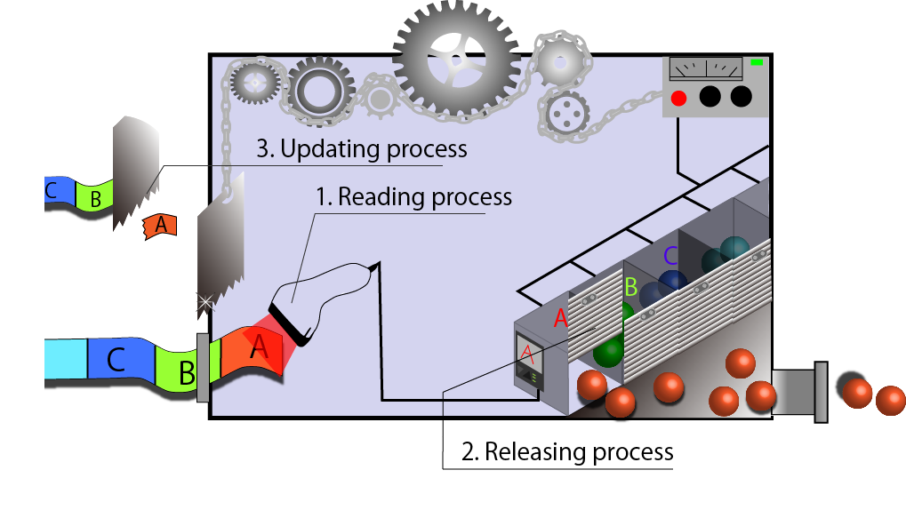
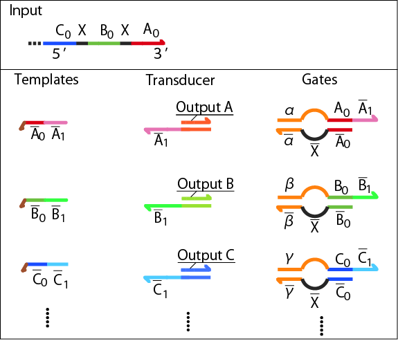
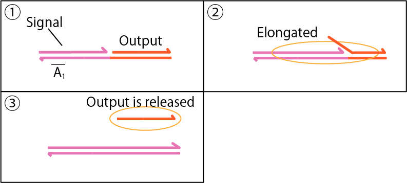
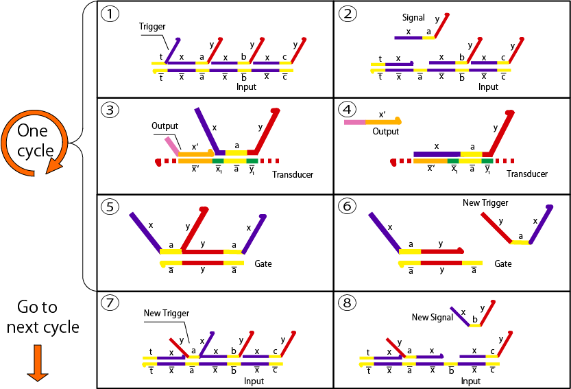

Design
Enzymatic device
Here, we explain the device using DNA and enzymes. First, we overview the outline of mechanism.

The device includes three processes, which are reading process, releasing process and updating process. In reading process, Input DNA gives instructions of the releasing order to the device. With the first instruction, a corresponding signal is activated and transmitted to next processes. In releasing process, Output is released by the signal from the previous process. After releasing, updating process starts. In the updating process, Input is renewed by deleting the first instruction on it. By cycling these three processes, single-stranded DNA output are generated in order, whose sequence is coded in Input DNA.
Reading process
In the following, we explain the details of the three processes. For the reading process, we need Templates, Transducer and Gates as shown below.

Repeating Step3 and Step4, single stranded DNA (Signal) is amplified. The Signal will be transmitted to the next processes: releasing and updating processes.
Releasing process
Following chemical reactions represent the releasing process. It conposed of Signal, Transducer, and polymerase.
This process takes place just after reading process because the toehold region of Transducer is slightly longer than that of Gate.

Updating process
Updating process composed of Input/Template complex, Signal and Gate.
This cycle is repeated again and again until all the instructions written in Input are executed. Eventually, the Outputs are released in programmed order.
Enzyme-free device
Here, we explain the mechanisms of Enzyme-free device (using only DNA).Enzyme-free device is designed based on seesaw gates [1] which is capable of cascading strand displacement reactions. Components of the device are Input, Trigger, Gate, Transducer, and Fuel.
Like Enzymatic device, the order of releasing output is coded in Input, while other DNA components are utilized for cascading the reactions. Cascading reactions are implemented by the following steps.
The device repeats this cycle until all Outputs are released. As well as Enzymatic device, programmability is an important feature of the device.

Reference
[1] L. Qian, E, Winfree, Science 332 (6034) (2011) 1196-1201